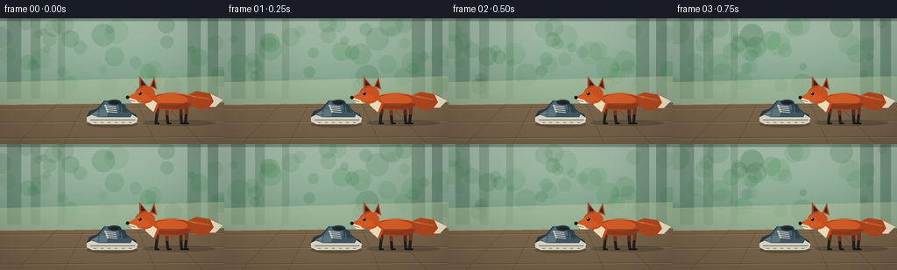
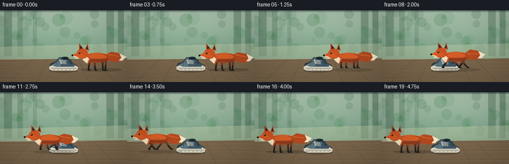
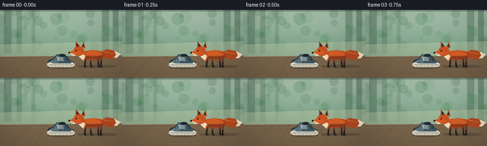
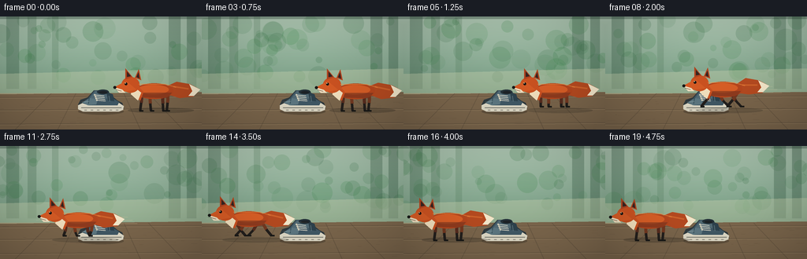

CODING AGENTS AS PIXEL WORLD MODELS
traex/GPT-5.6-Sol · dynamic_spatial_relationship_0029
点击播放 · 原生 RGB 像素
逐轮保存的候选
回放视频、检查图与代码变化。
每份候选均可单独播放。实际图片检查记录在下方工具轨迹中。
候选 01播放与检查图
点击播放 · 原生 RGB 像素


展开代码变化
--- 上一保存版本
+++ 本次保存版本
@@ -0,0 +1,175 @@
+from pathlib import Path
+import math
+import numpy as np
+from PIL import Image, ImageDraw, ImageFilter
+import artifact_io
+
+W,H,N = 256,144,20
+S=4
+rng=np.random.default_rng(29)
+
+def sc(v): return int(round(v*S))
+def pts(seq): return [(sc(x),sc(y)) for x,y in seq]
+def ellipse(d, box, fill, outline=None, width=1):
+ d.ellipse(tuple(sc(v) for v in box), fill=fill, outline=outline, width=sc(width) if outline else 1)
+def polygon(d, p, fill): d.polygon(pts(p), fill=fill)
+def line(d,p,fill,width=1,joint='curve'): d.line(pts(p),fill=fill,width=sc(width),joint=joint)
+
+def background(frame_i):
+ im=Image.new('RGB',(W*S,H*S))
+ a=np.array(im)
+ # warm forest/porch gradient
+ for y in range(H*S):
+ yy=y/(H*S-1)
+ if yy < .68:
+ t=yy/.68
+ col=np.array([180,205,184])*(1-t)+np.array([113,151,126])*t
+ else:
+ t=(yy-.68)/.32
+ col=np.array([150,132,99])*(1-t)+np.array([105,87,65])*t
+ a[y,:,:]=np.clip(col,0,255)
+ im=Image.fromarray(a.astype(np.uint8)); d=ImageDraw.Draw(im,'RGBA')
+ # soft distant woods
+ for x,w,hue in [(8,16,(52,91,67,85)),(35,11,(61,101,73,70)),(214,15,(47,85,61,80)),(237,12,(49,87,64,90)),(66,8,(68,112,78,55))]:
+ d.rectangle((sc(x),0,sc(x+w),sc(92)),fill=hue)
+ # blurry foliage circles fixed in background
+ for _ in range(36):
+ x=float(rng.uniform(-5,261)); y=float(rng.uniform(4,79)); r=float(rng.uniform(4,14))
+ col=(45,98+int(rng.integers(0,35)),61,int(rng.integers(22,48)))
+ d.ellipse((sc(x-r),sc(y-r),sc(x+r),sc(y+r)),fill=col)
+ # sunlight opening and path edge
+ polygon(d,[(0,73),(256,66),(256,99),(0,101)],(201,210,174,100))
+ # deck/patio perspective boards
+ polygon(d,[(0,99),(256,96),(256,144),(0,144)],(123,102,76,255))
+ for y in [103,119,137]:
+ line(d,[(0,y),(256,y-2)],(67,57,45,80),1)
+ line(d,[(0,y+1),(256,y-1)],(218,193,151,45),1)
+ for x in [19,73,178,232]:
+ line(d,[(128+(x-128)*.58,98),(x,144)],(61,50,39,65),1)
+ # tiny wood grain
+ for _ in range(45):
+ x=float(rng.uniform(0,256)); y=float(rng.uniform(102,143)); length=float(rng.uniform(2,10))
+ line(d,[(x,y),(x+length,y+rng.uniform(-.5,.5))],(60,46,34,35),.5)
+ # upper/lower framing for cinematic depth
+ d.rectangle((0,0,W*S,sc(3)),fill=(26,48,38,80))
+ return im
+
+def draw_shoe(im):
+ d=ImageDraw.Draw(im,'RGBA')
+ # contact shadow beneath fixed shoe
+ ellipse(d,(99,117,157,125),(28,24,20,70))
+ # sole, side profile points left (toe)
+ polygon(d,[(99,112),(102,106),(111,103),(119,94),(136,94),(143,102),(149,107),(155,110),(157,117),(153,120),(106,120),(99,117)],(48,58,62,255))
+ polygon(d,[(99,113),(105,110),(151,110),(157,114),(156,119),(151,121),(105,121),(99,118)],(223,218,199,255))
+ line(d,[(103,116),(154,116)],(117,119,110,255),1)
+ # blue-gray upper
+ polygon(d,[(104,110),(112,104),(120,94),(136,95),(141,103),(151,109),(149,113),(112,113)],(64,88,101,255))
+ polygon(d,[(121,95),(135,96),(140,104),(127,105),(114,104)],(82,106,116,255))
+ polygon(d,[(105,109),(114,104),(124,105),(122,112),(111,113)],(93,119,129,255))
+ # heel panel and collar
+ polygon(d,[(135,96),(143,99),(145,108),(137,107)],(45,66,77,255))
+ ellipse(d,(123,93,138,99),(36,49,56,255))
+ ellipse(d,(126,95,136,98),(29,34,38,255))
+ # eyelets/laces
+ for j in range(4):
+ yy=99.8+j*2.2; xx=120+j*.9
+ ellipse(d,(xx-1,yy-1,xx+1,yy+1),(211,205,182,255))
+ line(d,[(xx,yy),(132+j*.6,yy+1.2)],(232,226,207,255),1)
+ # seams, toe shine, outsole tread
+ line(d,[(113,104),(112,111)],(39,65,76,180),1)
+ line(d,[(138,101),(139,108)],(127,151,156,130),1)
+ line(d,[(104,109),(113,108)],(185,205,200,90),1)
+ for x in range(107,154,8): line(d,[(x,119),(x+3,119)],(84,82,73,150),1)
+
+def fox_position(i):
+ # unmistakable initial placement on right, then a fast leftward dash, ending in a hold
+ xs=[193,193,192.7,192.8,192,187,177,163,147,130,113,97,82,68,57,54,54,54.5,54,54]
+ moving=5 <= i <= 14
+ if moving:
+ phase=(i-5)*1.62
+ bob=-2.1*abs(math.sin(phase))
+ else:
+ phase=.3
+ bob=.35*math.sin(i*.8)
+ return xs[i], 94+bob, phase, moving
+
+def draw_fox(im,i):
+ x,y,phase,moving=fox_position(i)
+ d=ImageDraw.Draw(im,'RGBA')
+ # speed wisps behind the rightward-streaming tail during the dash
+ if moving:
+ alpha=int(55*math.sin(math.pi*(i-5)/10))
+ for k in range(3):
+ line(d,[(x+43+k*5,y-3+k*4),(x+65+k*6,y-3+k*4)],(231,211,165,alpha),1)
+ # grounding shadow changes with airborne stride
+ shw=46 if moving else 58
+ ellipse(d,(x-31,116,x+53,123),(24,22,18,shw))
+
+ # legs behind/front: jointed silhouettes make locomotion readable
+ anchors=[(-13,6),(-3,7),(13,7),(20,6)]
+ offsets=[0,math.pi,math.pi,0]
+ for idx,((ax,ay),off) in enumerate(zip(anchors,offsets)):
+ swing=math.sin(phase+off)
+ if not moving: swing=([-0.18,0.12,0.08,-0.12][idx])
+ hipx=x+ax; hipy=y+ay
+ knee_x=hipx+5.2*swing
+ knee_y=hipy+10-2.0*abs(swing)
+ paw_x=knee_x+7.2*swing
+ paw_y=120 if not moving else y+23-2.3*abs(math.cos(phase+off))
+ # far legs muted charcoal, near legs rich dark brown
+ fur=(87,45,31,255) if idx in (0,2) else (115,57,33,255)
+ dark=(35,31,28,255)
+ line(d,[(hipx,hipy),(knee_x,knee_y)],fur,4)
+ line(d,[(knee_x,knee_y),(paw_x,paw_y)],dark,3.2)
+ line(d,[(paw_x-1,paw_y),(paw_x+4,paw_y)],(25,25,23,255),2)
+
+ # huge bushy tail, carried to the right
+ wag=1.2*math.sin(i*.7) + (2*math.sin(phase) if moving else 0)
+ polygon(d,[(x+18,y-5),(x+31,y-11+wag),(x+48,y-8+wag),(x+61,y-1+wag),
+ (x+52,y+8+wag),(x+35,y+10+wag),(x+19,y+5)],(181,74,32,255))
+ polygon(d,[(x+47,y-8+wag),(x+61,y-1+wag),(x+53,y+7+wag),(x+46,y+7+wag),(x+51,y+1+wag)],(244,232,203,255))
+ line(d,[(x+27,y-5),(x+46,y-2+wag)],(225,114,51,150),2)
+
+ # torso with warm highlight and darker underside
+ ellipse(d,(x-22,y-9,x+27,y+11),(181,70,29,255))
+ ellipse(d,(x-18,y-7,x+21,y+5),(215,94,38,255))
+ polygon(d,[(x-20,y+3),(x+25,y+3),(x+19,y+10),(x-12,y+9)],(120,52,30,160))
+ # neck / white chest
+ polygon(d,[(x-19,y-7),(x-30,y-12),(x-27,y+5),(x-15,y+13),(x-11,y+2)],(203,82,34,255))
+ polygon(d,[(x-25,y-6),(x-27,y+5),(x-18,y+13),(x-14,y+3)],(242,224,190,255))
+
+ # head facing left, tapered natural muzzle
+ ellipse(d,(x-39,y-17,x-16,y+3),(202,82,33,255))
+ polygon(d,[(x-33,y-12),(x-48,y-4),(x-37,y+2),(x-20,y-1)],(213,91,37,255))
+ polygon(d,[(x-48,y-4),(x-38,y-1),(x-34,y+3),(x-42,y+3)],(239,223,192,255))
+ ellipse(d,(x-49.2,y-5.5,x-45.5,y-2),(25,25,23,255))
+ # ears, dark inner ear
+ polygon(d,[(x-34,y-14),(x-34,y-28),(x-25,y-17)],(177,67,31,255))
+ polygon(d,[(x-22,y-16),(x-17,y-27),(x-14,y-13)],(181,70,31,255))
+ polygon(d,[(x-32,y-17),(x-32,y-24),(x-27,y-18)],(54,37,34,255))
+ polygon(d,[(x-20,y-17),(x-17.5,y-23),(x-16,y-15)],(54,37,34,255))
+ # eye + tiny catchlight
+ ellipse(d,(x-35,y-10,x-31.5,y-6.5),(25,22,20,255))
+ ellipse(d,(x-34.5,y-9.7,x-33.5,y-8.7),(244,227,175,255))
+ # mouth and whiskers
+ line(d,[(x-46,y-1),(x-39,y+1)],(74,41,31,220),.7)
+ line(d,[(x-44,y),(x-51,y+1)],(240,232,207,105),.5)
+ # golden back rim light
+ line(d,[(x-17,y-8),(x+17,y-8),(x+30,y-4)],(245,147,67,150),1)
+
+
+def make_frame(i):
+ im=background(i)
+ draw_shoe(im)
+ draw_fox(im,i)
+ # subtle vignette, keeps scene photographic without obscuring action
+ arr=np.asarray(im).astype(np.float32)
+ yy,xx=np.mgrid[0:H*S,0:W*S]
+ dx=(xx-W*S/2)/(W*S/2); dy=(yy-H*S/2)/(H*S/2)
+ vig=np.clip(1-0.105*(dx*dx+dy*dy),.82,1)[...,None]
+ arr=np.clip(arr*vig,0,255).astype(np.uint8)
+ im=Image.fromarray(arr).resize((W,H),Image.Resampling.LANCZOS)
+ return np.asarray(im.convert('RGB'),dtype=np.uint8)
+
+frames=np.stack([make_frame(i) for i in range(N)],axis=0)
+artifact_io.save(frames,Path(__file__).resolve().parent)
候选 02播放与检查图
点击播放 · 原生 RGB 像素


展开代码变化
--- 上一保存版本
+++ 本次保存版本
@@ -16,6 +16,8 @@
def line(d,p,fill,width=1,joint='curve'): d.line(pts(p),fill=fill,width=sc(width),joint=joint)
def background(frame_i):
+ # Reset the scenery seed so only the fox moves; this avoids temporal flicker.
+ rng=np.random.default_rng(29)
im=Image.new('RGB',(W*S,H*S))
a=np.array(im)
# warm forest/porch gradient
可观测工具轨迹
实际执行的命令与返回图片。
命令 1exit 0
/bin/bash -lc "cat prompt.txt && printf '\\n---RULES---\\n' && cat GENERATION_RULES.md && printf '\\n---SPEC---\\n' && cat task_spec.json"
命令 2exit 0
/bin/bash -lc "find . -maxdepth 2 -type f -printf '%p\\n' | sort"
命令 3exit 0
/bin/bash -lc 'cat artifact_io.py'
命令 4exit 0
/bin/bash -lc "cat > generate.py <<'PY'
from pathlib import Path
import math
import numpy as np
from PIL import Image, ImageDraw, ImageFilter
import artifact_io
W,H,N = 256,144,20
S=4
rng=np.random.default_rng(29)
def sc(v): return int(round(v*S))
def pts(seq): return [(sc(x),sc(y)) for x,y in seq]
def ellipse(d, box, fill, outline=None, width=1):
d.ellipse(tuple(sc(v) for v in box), fill=fill, outline=outline, width=sc(width) if outline else 1)
def polygon(d, p, fill): d.polygon(pts(p), fill=fill)
def line(d,p,fill,width=1,joint='curve'): d.line(pts(p),fill=fill,width=sc(width),joint=joint)
def background(frame_i):
im=Image.new('RGB',(W*S,H*S))
a=np.array(im)
# warm forest/porch gradient
for y in range(H*S):
yy=y/(H*S-1)
if yy < .68:
t=yy/.68
col=np.array([180,205,184])*(1-t)+np.array([113,151,126])*t
else:
t=(yy-.68)/.32
col=np.array([150,132,99])*(1-t)+np.array([105,87,65])*t
a[y,:,:]=np.clip(col,0,255)
im=Image.fromarray(a.astype(np.uint8)); d=ImageDraw.Draw(im,'RGBA')
# soft distant woods
for x,w,hue in [(8,16,(52,91,67,85)),(35,11,(61,101,73,70)),(214,15,(47,85,61,80)),(237,12,(49,87,64,90)),(66,8,(68,112,78,55))]:
d.rectangle((sc(x),0,sc(x+w),sc(92)),fill=hue)
# blurry foliage circles fixed in background
for _ in range(36):
x=float(rng.uniform(-5,261)); y=float(rng.uniform(4,79)); r=float(rng.uniform(4,14))
col=(45,98+int(rng.integers(0,35)),61,int(rng.integers(22,48)))
d.ellipse((sc(x-r),sc(y-r),sc(x+r),sc(y+r)),fill=col)
# sunlight opening and path edge
polygon(d,[(0,73),(256,66),(256,99),(0,101)],(201,210,174,100))
# deck/patio perspective boards
polygon(d,[(0,99),(256,96),(256,144),(0,144)],(123,102,76,255))
for y in [103,119,137]:
line(d,[(0,y),(256,y-2)],(67,57,45,80),1)
line(d,[(0,y+1),(256,y-1)],(218,193,151,45),1)
for x in [19,73,178,232]:
line(d,[(128+(x-128)*.58,98),(x,144)],(61,50,39,65),1)
# tiny wood grain
for _ in range(45):
x=float(rng.uniform(0,256)); y=float(rng.uniform(102,143)); length=float(rng.uniform(2,10))
line(d,[(x,y),(x+length,y+rng.uniform(-.5,.5))],(60,46,34,35),.5)
# upper/lower framing for cinematic depth
d.rectangle((0,0,W*S,sc(3)),fill=(26,48,38,80))
return im
def draw_shoe(im):
d=ImageDraw.Draw(im,'RGBA')
# contact shadow beneath fixed shoe
ellipse(d,(99,117,157,125),(28,24,20,70))
# sole, side profile points left (toe)
polygon(d,[(99,112),(102,106),(111,103),(119,94),(136,94),(143,102),(149,107),(155,110),(157,117),(153,120),(106,120),(99,117)],(48,58,62,255))
polygon(d,[(99,113),(105,110),(151,110),(157,114),(156,119),(151,121),(105,121),(99,118)],(223,218,199,255))
line(d,[(103,116),(154,116)],(117,119,110,255),1)
# blue-gray upper
polygon(d,[(104,110),(112,104),(120,94),(136,95),(141,103),(151,109),(149,113),(112,113)],(64,88,101,255))
polygon(d,[(121,95),(135,96),(140,104),(127,105),(114,104)],(82,106,116,255))
polygon(d,[(105,109),(114,104),(124,105),(122,112),(111,113)],(93,119,129,255))
# heel panel and collar
polygon(d,[(135,96),(143,99),(145,108),(137,107)],(45,66,77,255))
ellipse(d,(123,93,138,99),(36,49,56,255))
ellipse(d,(126,95,136,98),(29,34,38,255))
# eyelets/laces
for j in range(4):
yy=99.8+j*2.2; xx=120+j*.9
ellipse(d,(xx-1,yy-1,xx+1,yy+1),(211,205,182,255))
line(d,[(xx,yy),(132+j*.6,yy+1.2)],(232,226,207,255),1)
# seams, toe shine, outsole tread
line(d,[(113,104),(112,111)],(39,65,76,180),1)
line(d,[(138,101),(139,108)],(127,151,156,130),1)
line(d,[(104,109),(113,108)],(185,205,200,90),1)
for x in range(107,154,8): line(d,[(x,119),(x+3,119)],(84,82,73,150),1)
def fox_position(i):
# unmistakable initial placement on right, then a fast leftward dash, ending in a hold
xs=[193,193,192.7,192.8,192,187,177,163,147,130,113,97,82,68,57,54,54,54.5,54,54]
moving=5 <= i <= 14
if moving:
phase=(i-5)*1.62
bob=-2.1*abs(math.sin(phase))
else:
phase=.3
bob=.35*math.sin(i*.8)
return xs[i], 94+bob, phase, moving
def draw_fox(im,i):
x,y,phase,moving=fox_position(i)
d=ImageDraw.Draw(im,'RGBA')
# speed wisps behind the rightward-streaming tail during the dash
if moving:
alpha=int(55*math.sin(math.pi*(i-5)/10))
for k in range(3):
line(d,[(x+43+k*5,y-3+k*4),(x+65+k*6,y-3+k*4)],(231,211,165,alpha),1)
# grounding shadow changes with airborne stride
shw=46 if moving else 58
ellipse(d,(x-31,116,x+53,123),(24,22,18,shw))
# legs behind/front: jointed silhouettes make locomotion readable
anchors=[(-13,6),(-3,7),(13,7),(20,6)]
offsets=[0,math.pi,math.pi,0]
for idx,((ax,ay),off) in enumerate(zip(anchors,offsets)):
swing=math.sin(phase+off)
if not moving: swing=([-0.18,0.12,0.08,-0.12][idx])
hipx=x+ax; hipy=y+ay
knee_x=hipx+5.2*swing
knee_y=hipy+10-2.0*abs(swing)
paw_x=knee_x+7.2*swing
paw_y=120 if not moving else y+23-2.3*abs(math.cos(phase+off))
# far legs muted charcoal, near legs rich dark brown
fur=(87,45,31,255) if idx in (0,2) else (115,57,33,255)
dark=(35,31,28,255)
line(d,[(hipx,hipy),(knee_x,knee_y)],fur,4)
line(d,[(knee_x,knee_y),(paw_x,paw_y)],dark,3.2)
line(d,[(paw_x-1,paw_y),(paw_x+4,paw_y)],(25,25,23,255),2)
# huge bushy tail, carried to the right
wag=1.2*math.sin(i*.7) + (2*math.sin(phase) if moving else 0)
polygon(d,[(x+18,y-5),(x+31,y-11+wag),(x+48,y-8+wag),(x+61,y-1+wag),
(x+52,y+8+wag),(x+35,y+10+wag),(x+19,y+5)],(181,74,32,255))
polygon(d,[(x+47,y-8+wag),(x+61,y-1+wag),(x+53,y+7+wag),(x+46,y+7+wag),(x+51,y+1+wag)],(244,232,203,255))
line(d,[(x+27,y-5),(x+46,y-2+wag)],(225,114,51,150),2)
# torso with warm highlight and darker underside
ellipse(d,(x-22,y-9,x+27,y+11),(181,70,29,255))
ellipse(d,(x-18,y-7,x+21,y+5),(215,94,38,255))
polygon(d,[(x-20,y+3),(x+25,y+3),(x+19,y+10),(x-12,y+9)],(120,52,30,160))
# neck / white chest
polygon(d,[(x-19,y-7),(x-30,y-12),(x-27,y+5),(x-15,y+13),(x-11,y+2)],(203,82,34,255))
polygon(d,[(x-25,y-6),(x-27,y+5),(x-18,y+13),(x-14,y+3)],(242,224,190,255))
# head facing left, tapered natural muzzle
ellipse(d,(x-39,y-17,x-16,y+3),(202,82,33,255))
polygon(d,[(x-33,y-12),(x-48,y-4),(x-37,y+2),(x-20,y-1)],(213,91,37,255))
polygon(d,[(x-48,y-4),(x-38,y-1),(x-34,y+3),(x-42,y+3)],(239,223,192,255))
ellipse(d,(x-49.2,y-5.5,x-45.5,y-2),(25,25,23,255))
# ears, dark inner ear
polygon(d,[(x-34,y-14),(x-34,y-28),(x-25,y-17)],(177,67,31,255))
polygon(d,[(x-22,y-16),(x-17,y-27),(x-14,y-13)],(181,70,31,255))
polygon(d,[(x-32,y-17),(x-32,y-24),(x-27,y-18)],(54,37,34,255))
polygon(d,[(x-20,y-17),(x-17.5,y-23),(x-16,y-15)],(54,37,34,255))
# eye + tiny catchlight
ellipse(d,(x-35,y-10,x-31.5,y-6.5),(25,22,20,255))
ellipse(d,(x-34.5,y-9.7,x-33.5,y-8.7),(244,227,175,255))
# mouth and whiskers
line(d,[(x-46,y-1),(x-39,y+1)],(74,41,31,220),.7)
line(d,[(x-44,y),(x-51,y+1)],(240,232,207,105),.5)
# golden back rim light
line(d,[(x-17,y-8),(x+17,y-8),(x+30,y-4)],(245,147,67,150),1)
def make_frame(i):
im=background(i)
draw_shoe(im)
draw_fox(im,i)
# subtle vignette, keeps scene photographic without obscuring action
arr=np.asarray(im).astype(np.float32)
yy,xx=np.mgrid[0:H*S,0:W*S]
dx=(xx-W*S/2)/(W*S/2); dy=(yy-H*S/2)/(H*S/2)
vig=np.clip(1-0.105*(dx*dx+dy*dy),.82,1)[...,None]
arr=np.clip(arr*vig,0,255).astype(np.uint8)
im=Image.fromarray(arr).resize((W,H),Image.Resampling.LANCZOS)
return np.asarray(im.convert('RGB'),dtype=np.uint8)
frames=np.stack([make_frame(i) for i in range(N)],axis=0)
artifact_io.save(frames,Path(__file__).resolve().parent)
PY
python generate.py
ls -lh pixels.npz inspection.png frames/00.png frames/10.png frames/19.png"命令 5exit 0
/bin/bash -lc "python - <<'PY'
p='generate.py'
s=open(p).read()
s=s.replace(\"def background(frame_i):\\n im=Image.new('RGB',(W*S,H*S))\", \"def background(frame_i):\\n # Reset the scenery seed so only the fox moves; this avoids temporal flicker.\\n rng=np.random.default_rng(29)\\n im=Image.new('RGB',(W*S,H*S))\")
open(p,'w').write(s)
PY
python generate.py
python - <<'PY'
import numpy as np
from PIL import Image
# verify exact contract and enough temporal action
z=np.load('pixels.npz')['pixels']
print('packed tensor:',z.shape,z.dtype)
f=np.stack([np.asarray(Image.open(f'frames/{i:02d}.png')) for i in range(20)])
print('rgb frames:',f.shape,f.dtype)
print('mean changed pixels consecutive:', np.mean(np.any(f[1:] "'!= f[:-1],axis=3),axis=(1,2)).round(4).tolist())
PY'视觉工具实际返回图片 1

保存候选 2 份；完成命令 5 次；可验证图片返回 1 张。原始 API 响应与完整日志保留在本地。